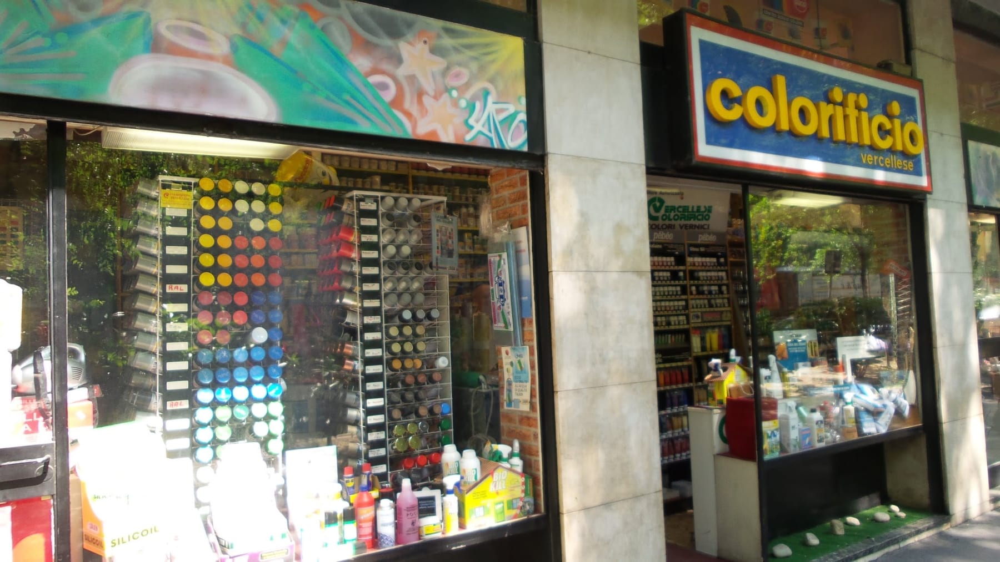
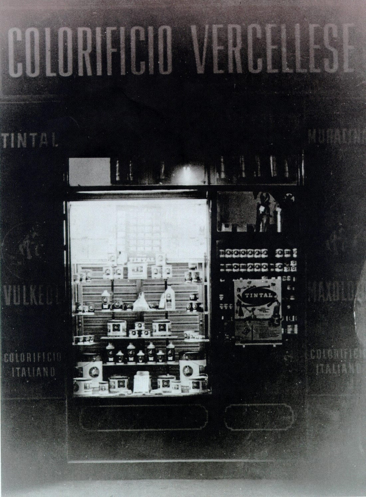
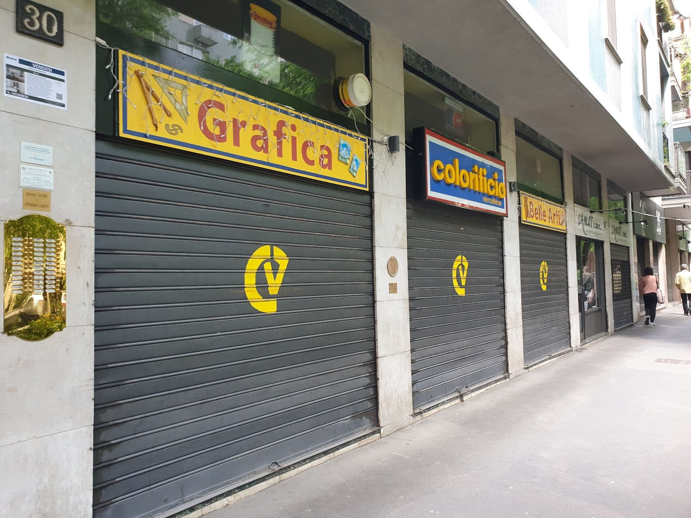

4,6 ★★★★½ · 124 recensioni
LA STRADA del colore.
Belle arti, vernici, bombolette e colori su misura in Via Raffaello Sanzio 30, a cento metri da piazza De Angeli — una bottega che macina colore dal 1936.
foto: Google Street View
La nostra storia
Il nome è una strada
Il Colorificio Vercellese prende il nome dalla via in cui fu fondato: la strada — allora sterrata, percorsa dai carri a cavalli — che dal centro di Milano portava verso Vercelli. Da lì il colore non si è più fermato.
-
Giugno 1936 La bottega sulla strada sterrata
Si aprono le porte: dentro si preparano le pitture come si faceva allora, con le terre, la calce e l'olio di lino. Fuori passano i carri.
-
Il dopoguerra La vetrina si accende

Ed ecco come appariva la vetrina nell'immediato dopoguerra: l'insegna a caratteri metallici, i barattoli in fila sotto la luce. La foto è quella vera, di casa.
-
Anni '90 Il trasloco di cento metri
Da piccola bottega a 150 metri quadri: il Colorificio si sposta da Via Marghera alla parallela Via Raffaello Sanzio 30, dove si trova ancora oggi.
-
Oggi Dalla calce ai murales
In vetrina le colonne di bombolette coi tappi arcobaleno, sopra l'ingresso un murale: la strada del colore è arrivata alla street art — passando per novant'anni di pennelli, tele e vernici.
Il negozio
Cosa trovi, per mondi di colore
Colori da artista
Olio, acrilico, acquarello e tempera: Maimeri, Winsor & Newton, Talens, Lefranc, Pebeo.
Pennelli
Sintetici e in pelo — martora, bue, setola, vaio: Winsor & Newton, Da Vinci, Emiliano.
Carte e matite
Carte Fabriano e Schoellers; matite Caran d'Ache, Stabilo, Conté, Derwent, Lyra. E tele, cavalletti, accessori.
Idropitture e smalti
Lavabili e traspiranti, satinati, lucidi e inodore: Duco, Keller, Tassani, Attiva, Max Mayer, Veneziani.
Effetti speciali
Spatolati, stucchi veneziani, terre e ossidi, linea legno per il restauro: cere, gommalacca, idrostucchi.
Attrezzi del mestiere
Pennellesse, rulli, reti, pertiche, diluenti, collanti e nastri: tutto quel che serve, dal primo strato all'ultimo.
Bombolette spray
Un'intera vetrina a colonne, coi tappi che fanno l'arcobaleno: per murales, ritocchi e progetti creativi.
Scala RAL
La codifica dei colori per ritocchi e verniciature a campione: si confronta al banco, si sbaglia di meno.
Découpage, stencil e stoffe
Colori per tessuti, vetro e ceramica (Deka, Pebeo), stencil art e materiali per il fai-da-te creativo.
Idee regalo
Set di colori, matite d'autore e piccole tentazioni da artista: regali creativi per ogni ricorrenza.
…e molto, molto altro: se non lo vedi, chiedilo al banco.
La bottega
Il consiglio fa parte del prezzo
- Suggerimenti tecnici
Dalla «semplice» tinteggiatura ai lavori meno semplici — spatolati, stucchi veneziani — con novant'anni di esperienza alle spalle.
- Colori su misura
Col tintometro professionale prepariamo il colore scelto e creato apposta per te.
- Gli applicatori giusti
Se non vuoi fare da te, ti mettiamo in contatto coi professionisti dei rivestimenti murali e delle finiture.
- Consegna a domicilio
Possibile in base a distanza e acquisto: telefona e ci accordiamo.
Dicono di noi
4,6 ★ su 124 recensioni Google
«Molto gentili, disponibili, danno consigli se richiesti, e sono simpatici: locale molto più fornito di certi posti che ho visto a Brera.»
S L · Local Guide
«Il paradiso per chi cerca colori, pennelli, materiale per hobby. La commessa è stragentile, mi ha aiutato nella scelta e sono super soddisfatto.»
Lusio · Local Guide
«Sono venuto più volte, per bombolette spray colorate e colori ad olio. Personale gentile e disponibile per ogni domanda sulle varie tecniche, anche molto preparati!»
Giorgio · Local Guide
«Ottimo, fornitissimo, staff molto competente, cortese e disponibile.»
Michele · Local Guide
«Molto gentili e competentissimi.»
Pio
Dove & quando
A cento metri da piazza De Angeli
Via Raffaello Sanzio 30, 20149 Milano · M1 De Angeli
…
| Lunedì | 15:00 – 19:30 |
| Martedì | 9:00 – 12:30 · 15:00 – 19:30 |
| Mercoledì | 9:00 – 12:30 · 15:00 – 19:30 |
| Giovedì | 9:00 – 12:30 · 15:00 – 19:30 |
| Venerdì | 9:00 – 12:30 · 15:00 – 19:30 |
| Sabato | 9:00 – 12:30 |
| Domenica | Chiuso |
Il lunedì apriamo al pomeriggio; il sabato solo al mattino.

Domande frequenti
Fate colori su misura?
Sì: col tintometro professionale prepariamo il colore scelto e creato apposta per te, per pareti e progetti speciali.
Avete materiale per belle arti?
Sì: olio, acrilici, acquarelli e tempere (Maimeri, Winsor & Newton, Talens), pennelli, carte Fabriano, matite e tele.
Tenete bombolette spray?
Sì, un'intera vetrina: bombolette per murales, ritocchi e hobby, con la scala colori RAL a disposizione.
Fate consegne a domicilio?
Sono possibili, in funzione della distanza e del tipo di acquisto: telefonaci allo 02 4800 4230 e ci accordiamo.
Dove siete e quando siete aperti?
In Via Raffaello Sanzio 30, a circa 100 metri dalla M1 De Angeli. Lunedì 15–19:30; martedì–venerdì 9–12:30 e 15–19:30; sabato 9–12:30.